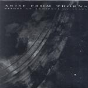

| Artist: | Arise From Thorns |
| Title: | Before An Audience Of Stars |
| Label: | Dark Symphonies Dark 11 |
| Length(s): | 67 minutes |
| Year(s) of release: | 2001 |
| Month of review: | [04/2001] |
| 2) | Time Alone | 5.26 |
| 3) | Among The Leaves | 4.34 |
| 4) | I Can't Believe | 4.12 |
| 5) | Lure | 5.16 |
| 7) | Remember The Stars | 4.42 |
| 9) | Persia | 4.08 |
| 10) | The Red And The Black | 9.03 |
| 11) | Bluer Skies | 4.47 |
| 12) | To Dance By Moonlight (live) | 4.42 |
| 13) | The Calling | 3.04 |
| 14) | Return Of The Old Forest | 1.52 |
Time Alone opens more relaxed even than the opener, but here as well, the pace goes up a bit after we heard a slightly jazzy intro with seventies like strings. Again great melodic material for the vocalist to play with. Where many singers of this type get lost in their own voice, having learned just that single little trick, Michelle Loose also plays with her voice, plays with the melody. The gothic metal idea is a bit stronger in this track, because of the presence of electric and rhythm guitars, but the music never becomes very heavy.
Ballad times with Among The Leaves where acoustic guitar, string like synths and the beautiful voice of Michelle Loose dominate. I Can't Believe is another ballad like piece, the song is now more romantic and in my opinion less interesting.
Lure has an easy going gait, but there is also something intimate and brooding about this track, that radiates a loneliness. Surrender is dominated by classical guitar, and sounds quite intricate.
Slowly we get underway in Remember The Stars, where the acoustic guitar and synth strings again dominate. Loose has a tear in her voice in this track. It is hard to tell whether this song sounds so familiar from my earlier listenings, or just because it is similar to one of the preceding tracks. The spanish guitar dominates this track with its ethereal sounds.
Lovelorn opens with piano and a nice playful pace. Some might think of Enya here, but the pace is a bit higher. The vocal melody is again a good one and the gothic style of the band is again in evidence. The bass plays a nice role at the end.
Persia sounds quite a bit different from the rest. There's some folk in here (as in most of the tracks in fact), but also quite strong percussion, but the vocal melody is certainly different from the others. The difference works out well and again Loose plays the leading role here with her clear ringing voice.
The more than nine minutes of The Red And Black need some introduction. Varied percussion and the romantic backdrop of keyboards I have come to expect lead up to something dark, cello I think. The gait of the music, the dark somberings on the keyboards make this into a lament. The middle part is more involved with wordless shards of vocals and quite a bit of electric guitar and some nice bass lines to boot. The final vocal part leads up to a short but wild finale.
Bluer Skies takes us back to dreamy acoustics. In some way I a reminded of Gordian nKnot's version of a Back track on their first album. Not melodically, but the way the acoustic guitar extends into the keyboard. After this part the pace goes up a bit.
I do not think it a good idea to include a single live track on this album. The sound quality is much less than the studio recording. The song is not better or worse than the rest, and Michelle still has a good voice. It just can't be heard as well. Strange choice.
Choirs open The Calling. Then the vocals and melody become more Arabic in style, because of the all-out vocals. In this way the song lies somewhere between that and a jig.